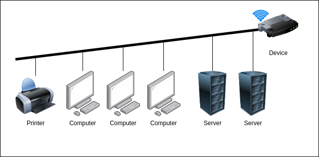
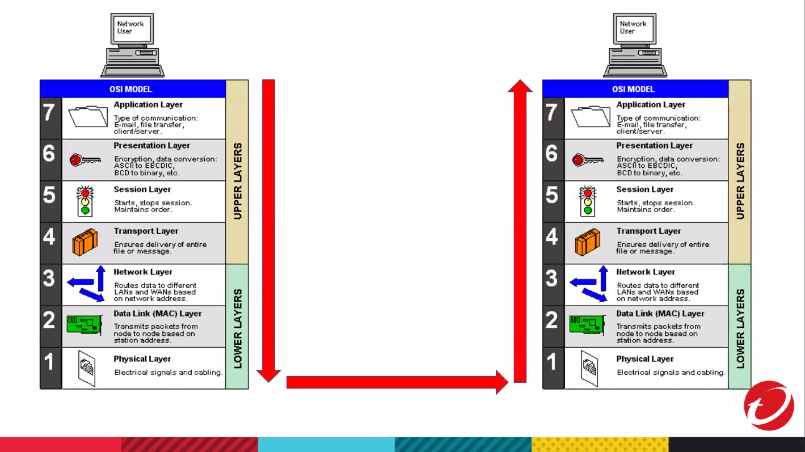
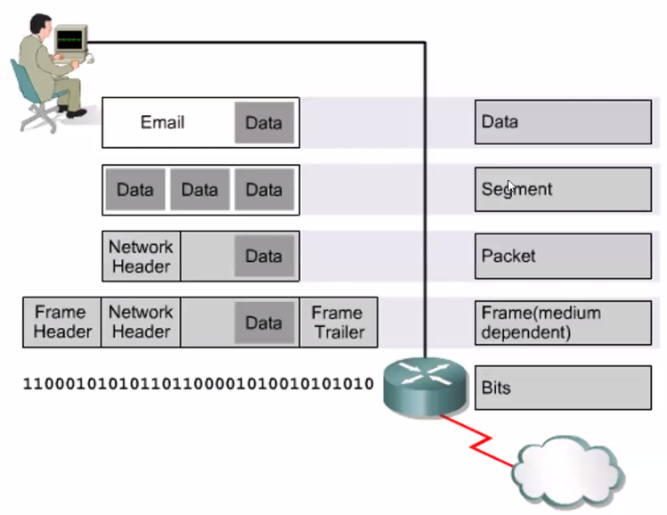
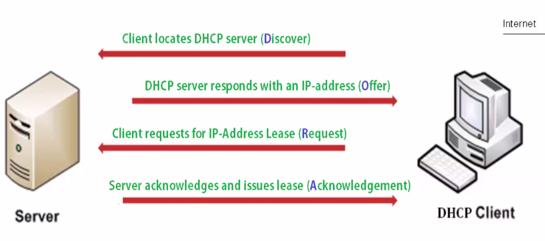
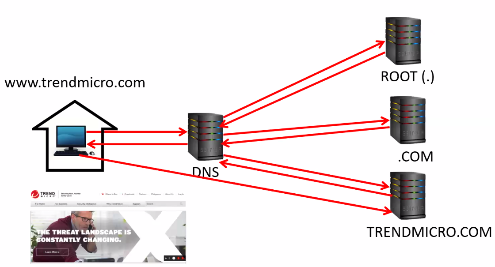

TrendMicro : Computer Networking Essentials¶
What is a network?¶
A network is simply two or more computers connected together that can communicate with each other and exchange data
Benefits of a network:
Information/Resource sharing
Efficient Communication/Collaboration

What makes a network?¶
Servers
Client
Network Cables
Network Interface Card (NIC)
Connectivity Devices
Network Operating System
Servers¶
High performance computers just like our laptops or desktops, but they have higher specifications and are purposely build to serve something. For example, a mail server is a dedicated machine that is used to receive and send emails to clients. Servers serves something to the client.
Mail
Application
Web
Database
Backup
Clients¶
Clients gets the data or communicate from the Server.
Desktop
Laptop
Tablet
Mobiles phone
Network Cables¶
It connects the computers together.
Coaxial cable
We do not actually use them anymore and they are legacy cables.
Fiber optic
Use optical fibers to transmit data via fast-traveling pulses of light.
UTP / STP
Unshielded or Shielded Twisted Pair (e.g. LAN Cable)
Network Interface Card (NIC)¶
There are two types of Network Interface Card, a wired connection and a wireless connection. A network interface card (NIC) is a hardware component, typically a circuit board or chip, which is installed on a computer so it can connect to a network.
Wireless (WiFi)
Wired
Connectivity Devices¶
They are the devices in which computers connect to.
Hub
This is one of the original connectivity devices. Already outdated and slower.
Switches
You can identify switches if you see a device that has a lot of ports. It is the center of the network and allow network communication between one computer to another computer.
Router
Used in conjunction with a switch so that a computer within the network can traverse or go to another network. The purpose of a router is to connect one network to different networks.
Network Operating Systems¶
Capable of using networking, but before old types of operating systems does not have networking capability.
OSI Layers¶
OSI (Open Systems Interconnection) layers describe how computers communicate with each other. It gives the person an idea of how much you understand networking.

Application
Interface to end user. Interaction directly with software application.
Presentation
Formats data to be “presented” between application-layer entities.
Session
Manages connections between local and remote applications.
Transport
Ensures integrity of data transmission.
Network
Determines how data gets from one hosts to another.
Data Link
Defines formats of data on the network.
Physical
Transmits raw bit stream over physical medium.
Example:

IP Addressing¶
A way to identify in where to send data to.
IPv4¶
It is 32-bits (4-octets) and is divided into Network ID and Host ID. This is the most common IP address, and it is assigned to each device connected to a network. An IP address should be unique. For example, the Network ID would be your street, and the Host ID would be your house number.
Example:
172.16.1.10
Binary to Decimal¶
| 128 | 64 | 32 | 16 | 8 | 4 | 2 | 1 |
| 1 | 0 | 1 | 1 | 0 | 1 | 0 | 1 |
128 + 32 + 16 + 4 + 1 = 181
IP Address Classes¶
It is like a telephone number. IP addresses are designed to be scalable, and the higher classes will be smaller than the lower classes.
IP Address Class¶
Class A
1.0.0.0 - 126.255.255.255
Class B
128.0.0.0 - 191.255.255.255
Class C
192.0.0.0 - 223.255.255.255
Class D and Class E but they are normally not used to be assigned. Class D is use for multicast IP addressing, while Class E are reserved IP addresses.
Private IP Address¶
Class A
10.0.0.0 - 10.255.255.255
Class B
172.16.0.0 - 172.31.255.255 Class C
192.168.0.0 - 192.168.255.255
Special IP Address¶
Loop Back
127.0.0.1 - 127.255.255.255
It is not assigned to a particular computer.
Default Gateway is basically the router’s private IP address. The term default gateway is used to mean the router on your LAN which has the responsibility of being the first point of contact for traffic to computers outside the LAN.
Dynamic Host Configurtion Protocol (DHCP)¶
DHCP is a protocol used by computers to automatically obtain an IP address and network configuration. A DHCP Server is a network server that automatically provides and assigns IP addresses, default gateways, and other network parameters to client devices. It relies on the standard protocol known as Dynamic Host Configuration Protocol or DHCP to respond to broadcast queries by clients.

Domain Name Server (DNS)¶
DNS, or the domain name system, is the phonebook of the Internet, connecting web browsers with websites. They are human-readable names instead of showing up an IP address that will be hard to remember (e.g. facebook.com). A DNS server is a computer with a database containing the public IP addresses associated with the names of the websites an IP address brings a user to. DNS acts like a phonebook for the internet. Whenever people type domain names, like Yahoo.com, into the address bar of web browsers, the DNS finds the right IP address. The site’s IP address is what directs the device to go to the correct place to access the site’s data.
